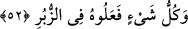
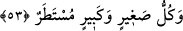

korkacak yok mudur?
Bu âyet-i kerîme’de şu mânâya da işâret vardır; Allah şöyle buyuruyor: Biz ezelî olan
kudretimiz ve her şeye ulaşan hikmetimiz gereği sizin benzerlerinizi ya tabiî veya irâdî
ölümle yok ettik. Ey emmâre nefis esirleri ve ey dolaşan kalp sâhipleri! Bundan ibret
alıp kendisi için daha lâyık ve uygun olanı seçecek yok mu?
52. Yaptıkları her şey kitaplarda (amel defterlerinde) mevcuddur.
“Yaptıkları her şey” küfür ve isyan türünden ne varsa “kitaplarda” hafaza
meleklerinin yazdıkları divanda “mevcuddur.”
İmâm Gazzâlî demiştir ki; zamanımız kâfirlerinin yaptıkları işler nasıl bizim
kitabımızda anlatılıp kaydedilmişse, önceki milletlerin yaptıkları bütün işleri de
peygamberlerine indirilmiş kitaplarında yazılıdır.
53. Küçük büyük her şey satır satır yazılmıştır.
İnsanların yapmış oldukları işlerden “küçük büyük her şey” bütün ayrıntılarıyla levh-
i mahfûz’da “satır satır yazılmıştır.”
Yahya b. Muâz (r.a.) demiştir ki: Şâhidliğin doğru yapılacağını, yaptığı işlerin
kendisine gösterileceğini ve onlarla cezâ veya mükâfâtlanacağını bilen kimse işlerini
güzelleştirmeğe, amellerini samîmî olarak yapmağa ve geçmişte ısrarla işlediği
günahlarından dolayı istiğfâr etmeğe devam eder.
Rivâyete göre Peygamberimiz (s.a.) küçük günahları bir örnekle şöyle açıklamıştır:
“Günahların küçükleri şuna benzer: Yeryüzünde çöl olan bir yerde konaklayan bir
topluluk, bir araya gelip her biri odun toplamağa gider ve birer odun parçası
getirirler ve ortalığa koca bir odun yığını oluştururlar, yakarak ekmeklerini
pişirirler.
İşte küçük günahlar da sâhibinin aleyhine birikip Allah’ın bağışlayacağı kimseler
müstesnâ, insanı mahveder. Öyleyse, günahların küçüklerinden sakının. Çünkü
onların hesabını bir soran vardır.”[161]
Bu şiiri söyleyen ne güzel söylemiş:
Günahların küçüğünü de büyüğünü de bırak budur işte takvâ ,
Dikenli yerde yürüyen kimse gibi yap, gördüğün dikenden sakın!